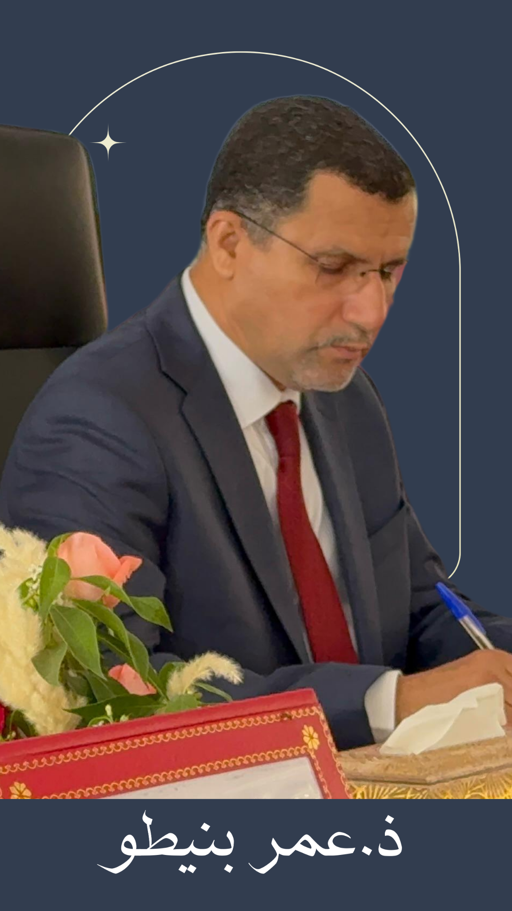

القانون والشأن العام • التدبير العمومي
فتح العرض
أزمة التوقيع لدى المنتخب: إشكالية التمييز بين الخطأ التدبيري والجريمة
عرض يناقش المسؤولية المرتبطة بتدبير الشأن العام وحدود التمييز بين الخطأ التدبيري والجريمة.
رؤى قانونية في قضايا الشأن العام
فضاء شخصي يهتم بقضايا المحاماة والقانون والشأن العام، ويقدم مقالات وآراء وقراءات وعروضا في مختلف القضايا القانونية والفكرية والمجتمعية.
اكتشف العروض والكتابات
أربعة عروض تم توزيعها حسب موضوعاتها داخل فضاء القانون والشأن العام
عرض يناقش المسؤولية المرتبطة بتدبير الشأن العام وحدود التمييز بين الخطأ التدبيري والجريمة.
عرض يندرج ضمن قضايا الحكامة وربط المسؤولية بالمحاسبة وأثر الفساد على التنمية.
عرض قانوني يتناول حق الإضراب من زواياه الدستورية والقانونية والحقوقية والسياسية.
دراسة حول الإطار المفاهيمي للعقوبات البديلة والأنظمة القانونية وصعوبات التنفيذ والمقارنة.
قضايا المهنة والفكر القانوني والتحليل التشريعي
محتوى خاص بالمحاماة وأدوارها وتحدياتها.
تحليلات وقراءات في النصوص والقضايا القانونية.
قضايا الحقوق والحريات والعلاقات المهنية.
دراسات في السياسة الجنائية والبدائل الإصلاحية.
راكم الأستاذ عمر بنيطو مسارا مهنيا ومؤسساتيا يجمع بين ممارسة المحاماة والعمل البرلماني والحقوقي والمدني.
محام بهيئة المحامين بمراكش، وعضو مجلس هيئة المحامين بمراكش لثلاث ولايات، اضطلع خلالها بعدد من المسؤوليات المهنية.
شارك الأستاذ عمر بنيطو في عدد كبير من الندوات والملتقيات واللقاءات الفكرية والقانونية والحقوقية، كما قدم عشرات المداخلات والمحاضرات والتأطيرات حول قضايا القانون والعدالة وحقوق الإنسان والتشريع والشأن العام.
ومن بين المجالات والمواضيع التي تناولتها هذه المشاركات: المحاماة وقضايا العدالة، القانون الدستوري والمؤسسات، حقوق الإنسان والحريات، السياسة الجنائية، الحكامة وربط المسؤولية بالمحاسبة، تدبير الشأن العام، التشريع الأسري، ومسؤولية المنتخب والمسؤول العمومي.
إلى جانب مشاركاته في الندوات واللقاءات، قدم الأستاذ عمر بنيطو عددا من العروض والدراسات القانونية والفكرية التي تناولت قضايا راهنة ومركزية، من بينها:
إشكالية التمييز بين الخطأ التدبيري والجريمة وحدود المسؤولية المرتبطة بتدبير الشأن العام.
دراسة العلاقة بين الفساد والتنمية وأهمية الحكامة والشفافية وربط المسؤولية بالمحاسبة.
قراءة في الإطار الدستوري والقانوني للحق في الإضراب وإشكالات تنظيم ممارسته.
دراسة مقارنة حول مفهوم العقوبات البديلة وأهدافها وإشكالات تنفيذها.
يهتم الأستاذ عمر بنيطو بقضايا المحاماة والعدالة والتشريع وحقوق الإنسان والحريات والسياسات العمومية والحكامة والشأن العام، إلى جانب المشاركة في النقاش الفكري والقانوني والحقوقي.
ويجمع مساره بين الممارسة القانونية والخبرة المؤسساتية والعمل الحقوقي والمدني، في إطار اهتمام متواصل بقضايا سيادة القانون وتعزيز العدالة وحماية الحقوق والحريات.
الندوات واللقاءات والتصريحات والأنشطة المختلفة
مساحة لعرض المشاركات والندوات واللقاءات.
التصريحات والحوارات والمشاركات الإعلامية.
أبرز الأنشطة والمبادرات والفعاليات.
سيتم هنا إضافة وسائل التواصل وروابط المنصات ونموذج المراسلة.